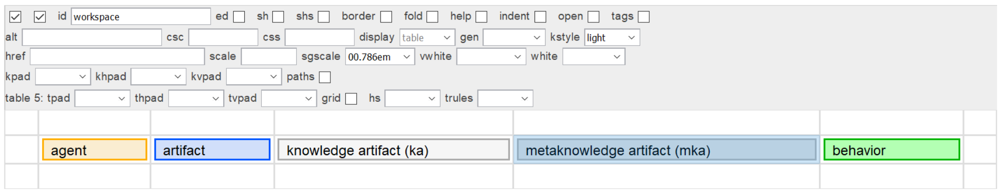

In markup systems, elements are first-class objects. Early experiments with extending and customizing semantics using attributes proved unworkable due to accessibility issues.
A couple of other design principles: The egg carton principle. How many eggs would you buy if you had to create your own egg cartons, on the spot? Be generous when you build containers. Redundancy, many ways to say the same thing, doesn't hurt.
Formalizing kfam starts by creating %spans; based on the concepts, e.g., <agent/>, <artifact/>, <behavior/>. Likewise for attributes. %semantic-atl; includes @agent, @artifact, and @behavior.
Most modeling is done in a specialized table called <kfam/>, which uses a restricted element set and has a fairly extensive set of controls:
Figure 21. <kfam/> workspace
|  |